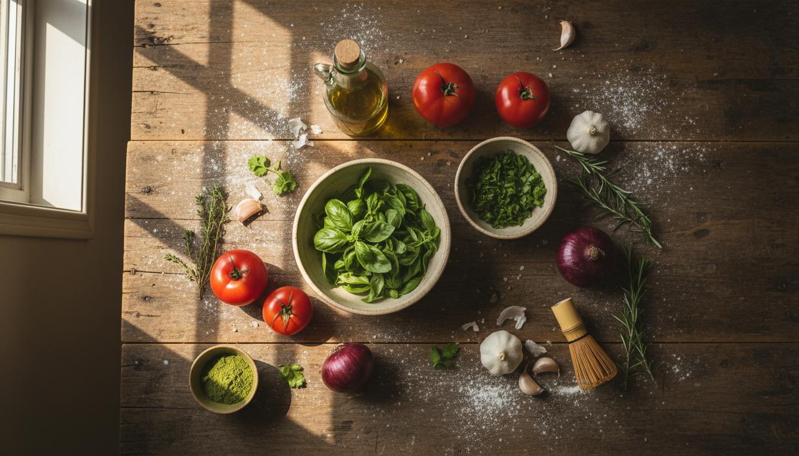

RECETARIO GOURMET
Recetario Rafael Nunez
Recetas tradicionales espanolas para compartir
Descargar libro de recetasCocina artesanal con recetas tradicionales espanolas, elaboradas con carino y dedicacion.
Cada receta esta pensada para compartir en familia, con ingredientes naturales y tecnicas tradicionales que han pasado de generacion en generacion.
Explora nuestra coleccion de recetas gourmet y encuentra el plato perfecto para cada ocasion.

RECETARIO GOURMET
Recetas tradicionales espanolas para compartir
Descargar libro de recetasNo hay recetas que coincidan con los filtros seleccionados.